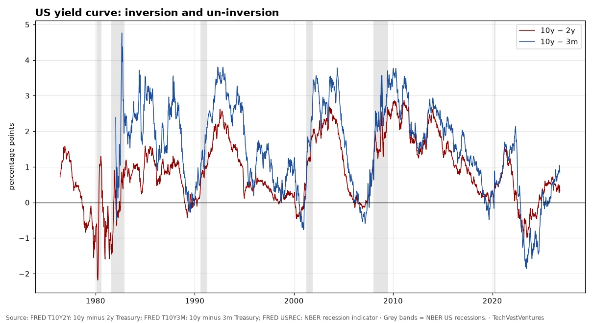
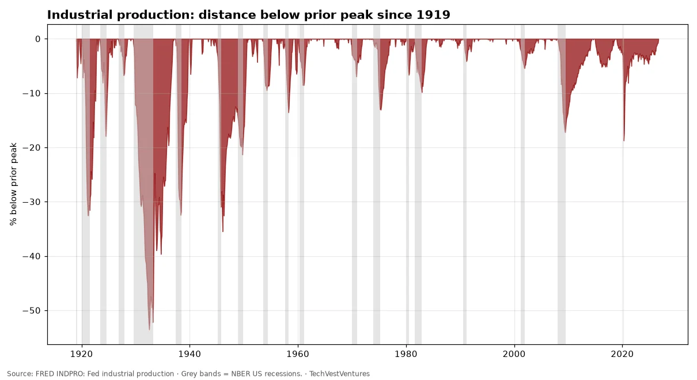
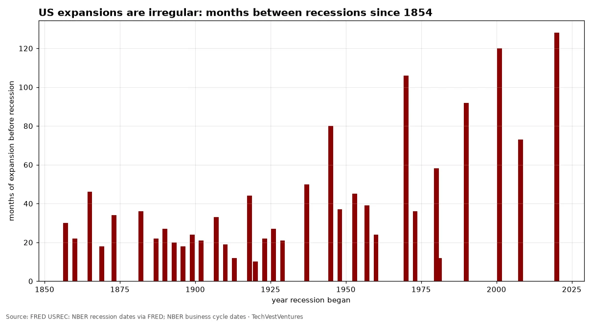
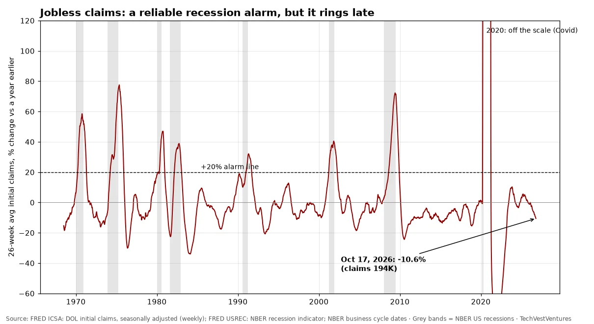
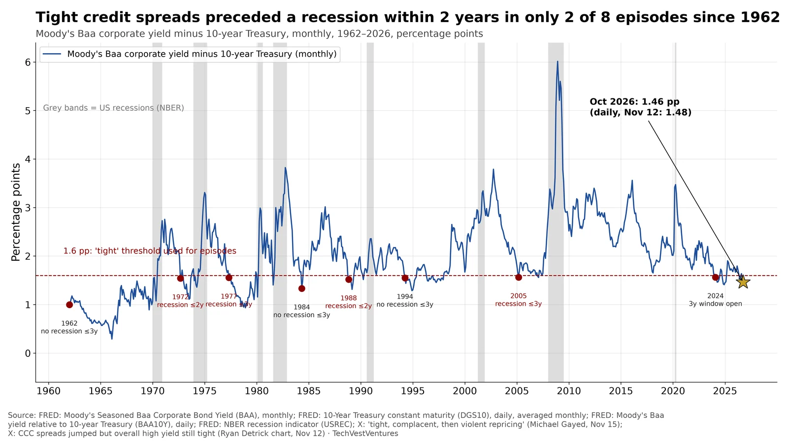
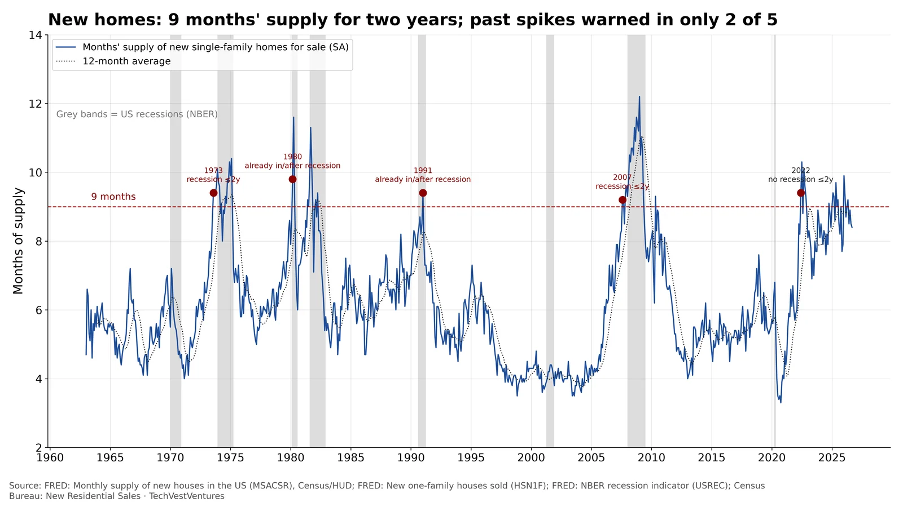
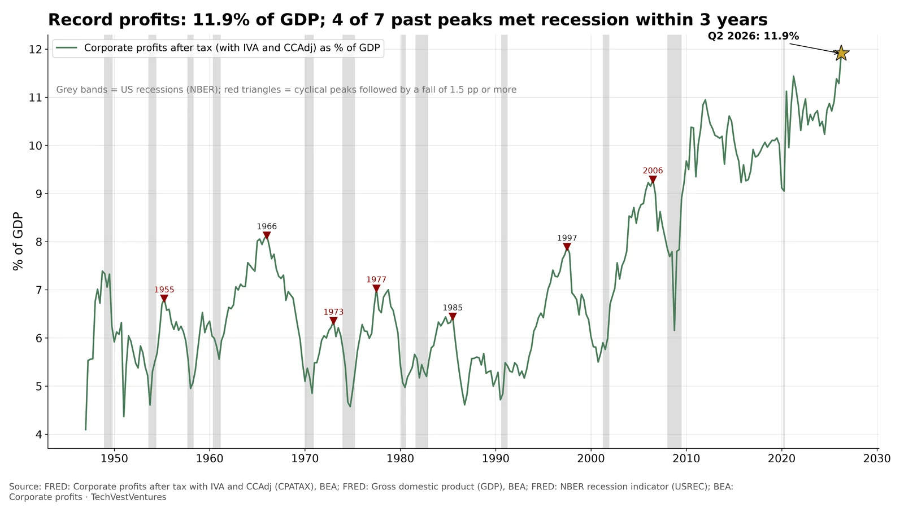

Q12. Cycle Counts

Robert Shiller's cyclically adjusted P/E for the S&P Composite. Long-run mean 17.5. Peaks: 32.6 in 1929, 44.2 in 1999, 38.6 in 2021; last value in the public file 35.2 (Sep 2024). Pattern count: only three prior readings above 30 (1929, 1997–2001, 2021) — 3 cycles, so by Michael Hentschel's rule a 'repeat' is suggestive, not proven. Note: the public Yale file we could reach ends Sep 2024.

10-year minus 2-year Treasury spread +0.31 pts and 10-year minus 3-month +0.78 pts on Oct 23, 2026. The 10y–2y curve inverted from July 2022 and turned positive again in Aug 2024. Since 1976 every recession was preceded by 10y–2y inversion, and recessions have usually begun after the curve un-inverts. Counting: 1978, 1988, 1998–2000, 2006, 2019 inversions — 5 episodes before the 2022 one, so this is one of the better-supported repeat patterns, though lead times varied from about 6 to 24 months and 2022's inversion has not (yet) been followed by an NBER recession.
Sources: FRED T10Y2Y: 10y minus 2y Treasury FRED T10Y3M: 10y minus 3m Treasury FRED USREC: NBER recession indicator

The Great Depression drop (-54% by Jul 1932) dwarfs every later slump: 1938 (-32%), 1945 demobilization (-35%), 2009 (-17%) and 2020 (-19%). Latest: 0.1% below the prior peak in Sep 2026. One true depression in a century of data is too few to model its return.

NBER has dated 35 US recessions since 1854. Expansions before them ranged from 10 to 128 months (median 31). The uneven spacing is why calendar-based 'cycle' forecasts are weak: there are many cycles, but no stable period.
Sources: FRED USREC: NBER recession dates via FRED NBER business cycle dates

Long-term US government bond yield from Shiller's data. Major troughs around 1899, 1941 and 2020; one great peak in 1981 (15.3%). In 150 years that is roughly two to two-and-a-half long (Kondratieff-length) cycles — fewer than the more-than-3 repetitions Michael Hentschel requires before treating a long-wave pattern as evidence.
Sources: Robert Shiller, Yale online data

The 10-year Treasury closed at 5.13% on Oct 21 and 4.96% on Oct 22, after first crossing 5% in mid-September; the 30-year is 5.29% and the 30-year mortgage rate 7.32%. Cycle count: since 1962, the 10-year has risen through 5% after at least 12 months below it only twice before, in July 1966 (followed by a 15-year bond bear market and the 1969-70 recession) and May 2006 (followed by the 2008 recession). That is 2 precedents, fewer than the 3+ repeats Michael Hentschel requires, so 'every time yields cross 5%, a recession follows' is a stab in the dark, not a pattern.
Sources: FRED DGS10 FRED DGS30 FRED MORTGAGE30US FRED USREC

Monthly 10-year government bond yields (OECD via FRED), latest Sep 2026 (Italy Aug). Japan's 3.05% is the highest since 1996; the UK's 5.24% and the US 4.99% are the highest since mid-2007; France since 2008 and Germany since 2009. The IMF's Oct 13 blog says the G7 average 10-year yield is the highest in nearly two decades and warns of the fiscal stakes. Cycle count: since 1990 the US 10-year has made three major cyclical peaks (late 1994, early 2000, mid-2007); two were followed by a US recession within about 1-2 years (2001, 2008-09) and one by a soft landing (1995). Three cycles with a 2-of-3 hit rate is right at Michael Hentschel's threshold, so read it as a warning, not a prediction.
Sources: FRED IRLTLT01USM156N (and DE, FR, IT, JP, GB, CA) IMF blog, Oct 13, 2026

The 26-week average of US initial jobless claims was -10.6% versus a year earlier in the week of Oct 17, 2026 (194K claims that week), far from the +20% line. Repeat count: in all 8 recessions since 1969 the gauge crossed +20% (8 of 8), with 0 false alarms. But it crossed before the recession began in only 1 of 8 (2001, by about a week). Months from recession start to crossing: 1970 +3, 1973 +4, 1980 +2, 1981 +7, 1990 +5, 2001 -0, 2008 +7, 2020 +1. Eight repeats make this a well-supported pattern, but as a coincident signal, not a forecast. Today's reading says no recession has started; it cannot say none is coming.
Sources: FRED ICSA: DOL initial claims, seasonally adjusted (weekly) FRED USREC: NBER recession indicator NBER business cycle dates

The S&P 500 closed at 7,376.86 on Friday Nov 6, down 2.68% on the week (from 7,580.07 on Oct 30) and 5.65% below its Oct 6 closing high of 7,818.93. Thursday Nov 5 alone was -4.36% (7,688.62 to 7,353.73), and the VIX closed at 25.64 on Nov 6 after 28.18 on Nov 5. Repeat count: of 74 completed S&P pullbacks of 5% or more since 1950, 26 (35%) eventually reached 10% and 11 (15%) reached 20%, a bear market. That is far more than three repeats, so the pattern is real: a 6% S&P dip becoming a bear market is the minority outcome (about 1 in 7). Calling this ‘just like 2000 or 2007’ from a 6% decline would be a stab in the dark. High-yield credit is not confirming a crash: the ICE BofA HY OAS went from 3.14 on Oct 28 to 3.48 on Nov 5, a rise of only 34 basis points.
- Week through Nov 6: S&P -2.68% to 7,376.86; Nasdaq -3.37%; SOX -12.15%; VIX 25.64.
- From the Oct 6 closing highs: S&P -5.65%; Nasdaq -10.94% (a correction); SOX -29.0%.
- Postwar repeat count: 11 of 74 completed 5%+ S&P pullbacks reached 20% (15%).
- HY OAS 3.14 → 3.48 (Oct 28 to Nov 5); credit did not spike with equities.
Sources: Yahoo Finance ^GSPC daily (S&P 500, 1927–Nov 6, 2026) Yahoo Finance ^IXIC daily (Nasdaq Composite) Yahoo Finance ^SOX daily (PHLX Semiconductor) Yahoo Finance ^VIX daily FRED SP500 (last print Nov 5: 7353.73, matches Yahoo) FRED NASDAQCOM FRED VIXCLS FRED BAMLH0A0HYM2 (ICE BofA US High Yield OAS)

Monthly gap between yields on Moody's seasoned Baa (lowest investment-grade) corporate bonds and the 10-year Treasury, January 1962 – October 2026 (FRED). At 1.46 percentage points in October 2026 (1.48 on Nov 12, daily series), the spread is tighter than in 80% of months since 1962 and 98% since 1990, even with the 10-year Treasury above 5%. Investors are demanding little extra yield for corporate credit risk. Pattern test: since 1962 the spread first fell to 1.6 pp or below in 8 separate episodes (red dots, at least two years apart). A recession followed within two years in 2 of them (1972, 1988) and within three years in 4; the spread widened by 0.5 pp or more within two years in 3. With 2 hits in 8 tries within two years and 4 within three (the 2024 episode's three-year window is not complete), 'tight spreads mean a crash is coming' is closer to a coin flip than a repeating cycle: a stab in the dark on timing.
Data
- Episodes (first month at or below 1.6 pp): Jan 1962 1.00 pp, widened +0.18 pp within 2y; Sep 1972 1.54 pp, widened +0.60 pp within 2y, recession followed; May 1977 1.55 pp, widened +0.08 pp within 2y, recession followed; May 1984 1.33 pp, widened +1.56 pp within 2y; Nov 1988 1.52 pp, widened +0.71 pp within 2y, recession followed; Apr 1994 1.55 pp, widened +0.28 pp within 2y; Mar 2005 1.56 pp, widened +0.30 pp within 2y, recession followed; Feb 2024 1.56 pp, widened +0.34 pp within 2y.
- The current episode began in February 2024. ICE BofA high-yield spread on Nov 12: 3.20 pp; investment-grade spread 0.89 pp (FRED).
- Bear case on X: 'In 2008, credit spreads went from tight to catastrophic in months... tight, complacent, then violent repricing.' Bull case: CCC spreads jumped, yet broad high-yield spreads stayed tight, so stress has not spread.
- The 2005 episode is the warning: the spread stayed tight for over two years before the 2007–09 blowout, longer than the windows tested here.
Sources: FRED: Moody's Seasoned Baa Corporate Bond Yield (BAA), monthly FRED: 10-Year Treasury constant maturity (DGS10), daily, averaged monthly FRED: Moody's Baa yield relative to 10-year Treasury (BAA10Y), daily FRED: NBER recession indicator (USREC) X: 'tight, complacent, then violent repricing' (Michael Gayed, Nov 15) X: CCC spreads jumped but overall high yield still tight (Ryan Detrick chart, Nov 12)

Rolling correlation between weekly S&P 500 returns and weekly 10-year Treasury bond returns (proxied by the fall in the 10-year yield), 1965–2026. Black line and shading: 3-year window; grey: 1-year window. Positive means stocks and bonds fall together, so bonds give no protection in a sell-off; negative means bonds rally when stocks drop. After turning positive in 2023 for the first time since 2001 and peaking at +0.31 in March 2025, the 3-year correlation has drifted back to -0.02 (1-year: +0.09) as stocks hit records while the 10-year climbed past 5%. Cycle count: on a smoothed basis the sign has changed regime only twice in 60 years that lasted more than a year (late 2001 to negative, mid-2023 to positive), plus a brief 1965–66 dip. With two genuine flips, any forecast of the next regime is a stab in the dark.
Data
- Smoothed regime changes (52-week average of the 3-year correlation crossing zero): Dec 1966 to positive, Dec 2001 to negative, Jul 2023 to positive.
- S&P 500 close Nov 13 2026: 7,561.67; 10-year Treasury: 5.10%.
- Why it matters: a 60/40 portfolio relies on negative correlation. When it is positive (1970s, 2022), bonds and stocks lose together.
- Using the yield change as a bond-return proxy ignores coupon income and convexity; it captures direction well at weekly frequency.
Sources: Yahoo Finance: S&P 500 (^GSPC) daily history, 1927–Nov 13 2026 FRED: 10-Year Treasury constant maturity (DGS10), daily FRED: S&P 500 (SP500), cross-check of recent closes X: 10-year at 5.16% after PPI, yields 'running the tape' (Nov 13)

Months' supply is how long the stock of new single-family homes for sale would last at the current sales pace (Census/HUD via FRED). It was 8.4 months in September 2026 and has averaged 8.8 over the past two years, a two-year average last matched in 2008–2010 and 1974–75. Pattern test: since 1963 the series first reached 9 months or more in 5 separate episodes at least two years apart (red dots). Of the 5 episodes whose two-year window is complete, 4 saw a recession within two years, but in 2 of those the recession had already begun, so only 2 gave advance warning. With so few repeats, a 9-month reading is a sign of builder stress, not a reliable recession clock: a stab in the dark on timing.
Data
- Episodes (first month at 9.0+ after two years below): Aug 1973 9.4, recession within 2 years; Mar 1980 9.8 (recession already under way); Jan 1991 9.4 (recession already under way); Aug 2007 9.2, recession within 2 years; Jun 2022 9.4.
- New-home sales were 676k annualised in September 2026, against 809k in January 2022.
- Why supply is high: builders kept completing homes and used rate buy-downs while resale inventory stayed tight, so the new-home market carries more of the stock than in past cycles.
- Doubt: high new-home supply in 2023–2026 came with low existing-home inventory; the overall housing market is less over-supplied than this series alone suggests.
Sources: FRED: Monthly supply of new houses in the US (MSACSR), Census/HUD FRED: New one-family houses sold (HSN1F) FRED: NBER recession indicator (USREC) Census Bureau: New Residential Sales

After-tax corporate profits (with inventory valuation and capital consumption adjustments, BEA via FRED) were $3.88 trillion at an annual rate in Q2 2026, 11.9% of GDP. That is the highest share since the series began in 1947 (the average is 7.2%) and above the 2006 cycle peak of 9.3%. Margins this wide are what an AI and tech boom looks like in the national accounts, and they are also what mean reversion feeds on. Pattern test: TVV finds 7 cyclical profit-share peaks since 1947 that were followed by a fall of at least 1.5 points. A recession began within three years of 4 of them. That repeats often enough to take seriously, but the timing from peak to recession has ranged from months to nearly three years, and the share has stayed above 10% since 2021 without a recession.
Data
- Peaks tested (share of GDP, recession within 3 years?): 1955 Q2 6.8% (yes); 1966 Q1 8.1% (no); 1973 Q1 6.4% (yes); 1977 Q3 7.0% (yes); 1985 Q3 6.4% (no); 1997 Q3 7.9% (no); 2006 Q3 9.3% (yes).
- Peaks are local highs within two years either side, kept only if the share then fell by 1.5 percentage points or more within three years; the most recent high cannot yet qualify.
- Q3 2026 profits are due with BEA's second GDP estimate; the share uses the same-quarter nominal GDP.
Sources: FRED: Corporate profits after tax with IVA and CCAdj (CPATAX), BEA FRED: Gross domestic product (GDP), BEA FRED: NBER recession indicator (USREC) BEA: Corporate profits